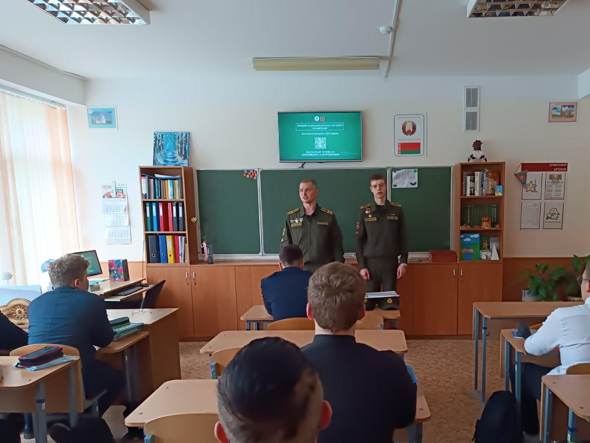
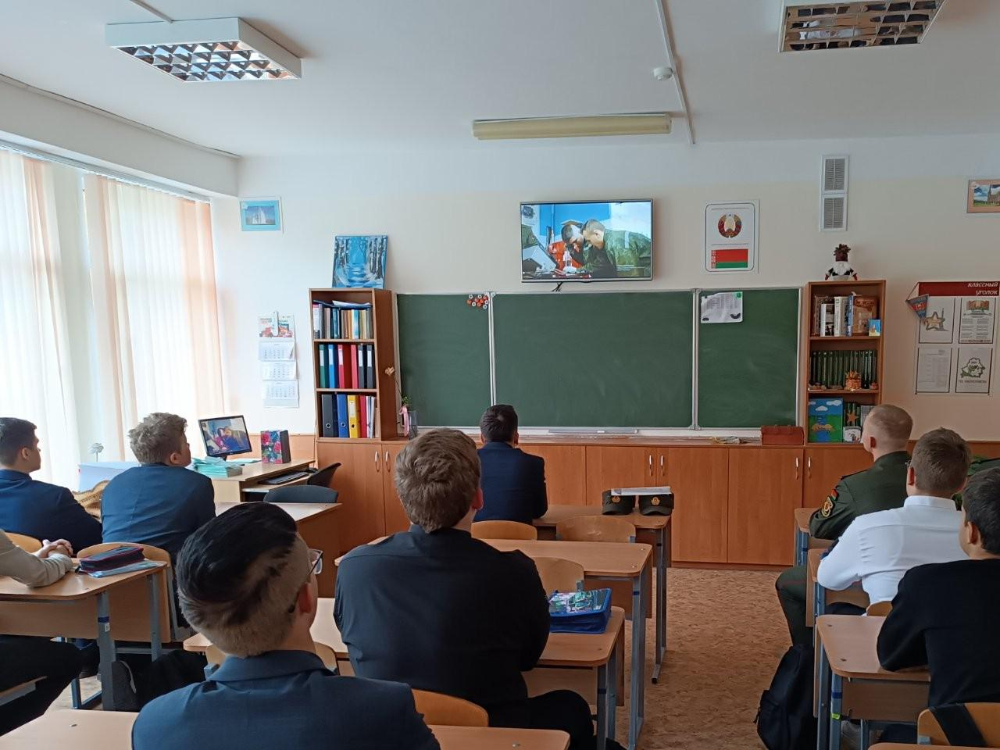
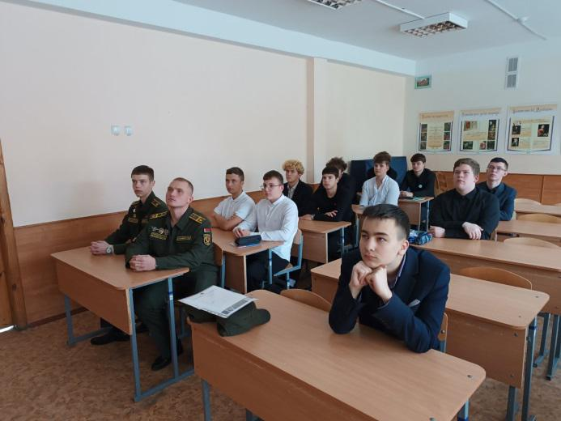

В ГОСТЯХ КУРСАНТЫ ВТФ БНТУ
Очередное мероприятие профориентационной направленности прошло 12 октября с юношами 10 «А» класса. В этот раз гостями Государственного учреждения образования «Гимназия №1 г. Борисова» стали курсанты 1 и 2 курсов военно-технического факультета Белорусского национального технического университета Михаил Русаков и Кирилл Сушкевич.

Курсанты продемонстрировали учащимся рекламный ролик об учреждении образования и отметили, что история создания факультета началась еще в далеком 1920 году с формированием кафедры военной и физической подготовки.

В настоящее время обучение курсантов осуществляется по пяти специальностям: промышленное и военное строительство, финансовое обеспечение и экономика боевой и хозяйственной деятельности войск, эксплуатация наземных транспортных и технологических машин и комплексов, в т.ч.: дорожно-строительные машины и оборудование специального назначения, эксплуатация и ремонт многоцелевых гусеничных и колесных машин, техническая эксплуатация автомобильной техники.
Курсанты подробно рассказали гимназистам о порядке поступления в ВУЗ, учебе и быте курсантов. В завершении Михаил и Кирилл ответили на все возникшие у учащихся вопросы.
